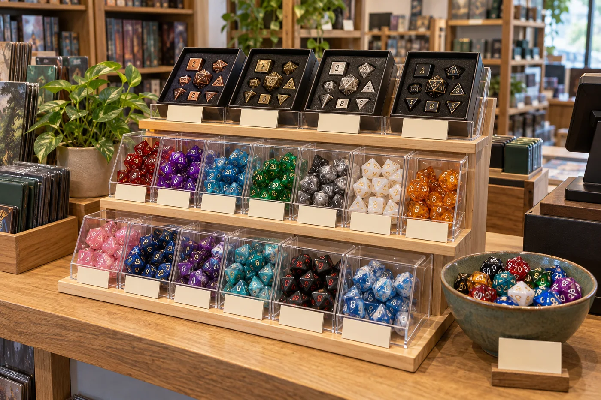

If you are planning for Game Store Day 2026, a focused RPG dice display can make your store easier to browse during a busy tabletop event. The goal is not to fill every shelf or predict a guaranteed bestseller. It is to help a new player understand what is in a set, give returning players a reason to explore, and make it easy for staff to answer product questions while they are also running the event.
This guide turns general retail event advice into a practical plan for a local game store: define one measurable goal, group dice by shopper need, label contents accurately, protect time for the demo, and record SKU-level results. For broader sourcing decisions, see our bulk DND dice buying guide for game stores and wholesale RPG dice selection guide.
The quick plan for a Game Store Day dice display
- Check the official event date, registration status, toolkit access, and store rules.
- Choose one goal, such as introducing new players to complete dice sets or testing a small number of new themes.
- Build three simple display zones: core play sets, theme-led discovery, and selected premium or gift items.
- Use clear labels, a hands-on sample only where practical, and a staff member who can explain what each product includes.
- Afterward, compare sales, margin, questions, and stock left with a relevant baseline before reordering.
Confirm Game Store Day 2026 dates and deadlines first
GAMA currently lists November 7, 2026 as Game Store Day. Its event page lists October 22 as the deadline to register and receive the retailer toolkit; registrations after that date receive the digital toolkit only. The page also lists October 8 as the publisher-box purchase deadline. Because that date is the day this article was reviewed, check the live event page immediately for availability and any time-zone or status changes before relying on it.
Do not treat an event date as a supplier delivery promise. If you need additional dice, first check what is already on hand and what a supplier can actually deliver. Standard catalog items may have a different timeline from custom artwork, custom colors, private-label packaging, or a new mold. Ask for current stock, sample status, MOQ, production time, shipping method, and destination-specific delivery estimates in writing. Our wholesale dice MOQ guide explains which order details to clarify.
Choose one event goal before choosing products
“Sell more dice” is hard to evaluate after a busy day. Choose an outcome that matches the reason you are participating. A store that wants to help new players might track how many visitors asked about a complete polyhedral set. A store testing a new theme might track units sold and customer questions for that theme. A store trying to build repeat visits might use an optional QR code to a newsletter or event calendar, with a clear explanation of what people are signing up for.
Write down the starting point before the event: which SKUs will be featured, how much stock is available, their landed cost, and the comparison period you will use later. If you have last year’s event data, compare like with like. If you do not, use a normal Saturday or another relevant store day as a rough baseline and label that comparison as imperfect. Record other promotions, new releases, or special events that could influence the result.
Build an RPG dice display that is easy to understand
Retail guides from Shopify recommend using a clear visual hierarchy, grouping related products, and avoiding clutter; Square’s event-preparation guide recommends planning the layout, placing strong products where customers can see them, and writing signage before event day. Those are general retail principles, not dice-specific performance guarantees. Applied to a game store, they suggest a simple display customers can understand at a glance.
Zone 1: Core play sets
Place standard seven-piece polyhedral sets where shoppers can reach and compare them. A common set contains a d4, d6, d8, d10, percentile d10, d12, and d20, but packaging varies, so show the exact contents for each SKU. Group by a useful attribute such as color family, material, or price band. Avoid mixing loose dice with complete sets unless the sign makes the distinction obvious.
Zone 2: Theme-led discovery
Use a small number of fantasy themes or color stories to help customers browse by character, campaign mood, or gift idea. A sign can say “Choose a color for your next character” or name a material, provided the description is accurate. If you have an established fantasy RPG dice theme collection, use themes that your own customers recognize rather than trying to represent every genre at once.
Zone 3: Premium and giftable options
Show premium metal, sharp-edge, liquid-core, or boxed dice only if the store can explain their material, care, package contents, and price. Keep heavy or delicate products secure and provide a tray or surface appropriate for handling. For boxed sets, turn one package forward so shoppers can see the exterior, then make the included dice and any accessories easy to confirm. A premium tier should invite comparison without making the core assortment feel secondary.

For a compact event table, a three-tier stand or shallow trays can create height without hiding products. Keep the most relevant items in the natural sightline, leave a clear path for browsing, and avoid piling stock so high that customers cannot pick up a package. If products have different sizes or retail packaging, test the layout before event morning. The display should be accessible to customers and easy for staff to replenish.
Choose an event assortment without overbuying
Start with products already supported by your store’s sales history and customer questions. Add only a few test SKUs that serve a distinct purpose. One practical planning sheet can use the fields below; it is more useful than ordering a large variety because a theme looks good in a photograph.
- Core: complete polyhedral sets that new and returning players can identify quickly.
- Choice: a limited color or fantasy theme range based on what customers ask for.
- Premium: one or two higher-consideration options if your shoppers already buy gifts or collectible dice.
- Add-on: single D20s or small accessories only when they have a clear use and a clear price label.
- Event stock note: SKU, opening quantity, current on-hand, unit cost, event price, supplier lead time, and reorder contact.
For each SKU, decide its job before placing it on the table: beginner purchase, campaign-night essential, gift, collection piece, or add-on. Remove products that duplicate another item without giving shoppers a meaningful choice. A narrower assortment makes it easier to compare, explain, count, and reorder. If you are evaluating new wholesale products, request actual samples and review number readability, finish, weight, packaging protection, and retail dimensions. The catalog and sample request page explains how to start that conversation.
Run an activity that helps people use the products
The activity does not need to be a large tournament. A short, repeatable demonstration can make dice less intimidating for a first-time player while leaving the staff enough time to serve the rest of the store. For example, offer a five-minute “meet the polyhedral dice” table: show the common shapes, explain how a complete set is organized, and let visitors try a simple sample roll. Keep any rules explanation compatible with the game being demonstrated and refer to that game’s official materials for specific rules.
Other low-complexity game store event ideas include a staff-pick dice showcase, a beginner table with pre-generated characters and loaner dice, or a “match the set” display where visitors identify which die is the d20, d12, or percentile die. If you offer a giveaway, follow event rules and local requirements, state eligibility and timing clearly, and do not make a purchase necessary unless the applicable rules allow it. Avoid implying that a dice roll predicts a real-world outcome or offering a prize mechanic that staff cannot administer fairly.
Write signs that answer the first product questions
A shopper should not have to ask whether the package contains a full set, how many pieces are inside, or whether a displayed die is sold individually. Keep the headline short and place the essential details near the product. Shopify’s retail-signage guide recommends matching signage to its purpose and measuring the response; for a dice display, the useful sign is the one that helps a customer make a comparison without interrupting play.
- Set contents: “Seven-piece polyhedral set: d4, d6, d8, d10, percentile d10, d12, d20.” Confirm the exact package before printing.
- Material: name the material and any care instruction only when confirmed by the product specification.
- Price: show the current price and whether it applies to a set, one die, or a display item.
- Handling: note if a heavy or delicate product should be rolled on a tray or inspected with staff.
- Next step: use one action, such as “Ask us to compare the sets” or a QR code to the store’s event page.
Use high contrast, readable type, and consistent wording. Avoid stacking several signs in the same sightline. If a QR code is part of the display, test it on multiple phones, link it to a mobile-friendly page, and identify what it opens. Do not use a QR code as a substitute for visible product contents or pricing.
Plan inventory and reorders with a simple worksheet
For each featured SKU, record opening stock, event-day quantity, units sold, damaged or returned units, and closing stock. If the store has comparable event data, use it as the starting point. If not, treat the event as a small test and keep the quantity within a level the business can carry after the event. Check supplier availability and replenishment timing before including an item in advertising.
A simple reorder calculation is: reorder point = expected sales during supplier lead time + safety stock. The numbers should come from the store’s own sales rate and the supplier’s confirmed lead time, not a generic number in an article. For seasonal or event-specific products, also consider whether the stock remains useful after November 7. A standard colorway may carry forward into regular sales; a date-specific package may not.
Separate in-stock catalog items from made-to-order work. For custom dice or private-label packaging, confirm artwork, sample approval, MOQ, production schedule, packing, freight, and import clearance. Do not promise an event arrival until the supplier confirms the complete timeline. If there is not enough time, use the event to collect feedback or display a sample for a future launch rather than risking an unverified deadline. Review available options in the wholesale dice catalog and ask for current availability through the game store dice supplier page.
Give staff a one-minute product brief
Share a short note before the doors open. It should say which products are featured, what each package includes, the price, where backup stock is stored, and who can answer a product or sourcing question. Include a simple handling instruction for metal or delicate dice. If a customer asks about game compatibility, staff should distinguish a product’s physical dice shape from any claim that it is an official or publisher-approved product.
Assign one person to check the display and restock during the event, even if that person has other duties. Keep a pen and a simple tally sheet nearby. Write down questions that repeat, such as “Does this include a percentile die?” or “Can I buy just the d20?” Those questions can reveal missing labels, a product gap, or a useful follow-up article or event. They are signals to investigate, not proof that a new SKU will sell.
Review the display before placing a larger reorder
Within a few days of the event, compare the featured dice with the baseline you selected. Review units sold by SKU, gross margin after landed cost, remaining inventory, returns or damage, QR scans, and staff observations. Note whether sales came from the display, an event promotion, a new campaign release, or another store activity. A single event can produce useful clues, but it is not enough to establish a long-term demand trend.
Then make one decision per product: keep the SKU in the regular assortment, reorder a smaller or larger quantity based on the store’s own target, change the display or label, test a related color/material, or discontinue it. If a product received attention but few purchases, ask whether price, package information, availability, or timing created friction before concluding that the style has no demand. For more SKU and sample review points, continue with our wholesale resin dice guide.
Game Store Day 2026 dice planning FAQ
When is Game Store Day 2026?
GAMA lists Game Store Day 2026 for November 7, 2026. Its current event page also lists retailer registration and toolkit deadlines. Check the live GAMA Game Store Day page before acting because event details can change.
What dice should a game store feature for Game Store Day?
Start with complete polyhedral sets that match your customers and stock position. Add a small number of theme-led, premium, or single-D20 products only when each fills a clear role. Verify package contents and availability before creating signs or ads.
How much RPG dice inventory should a store order?
Use comparable sales from your own store, current stock, supplier availability, landed cost, and replenishment lead time. There is no reliable universal unit count for every store or event.
Can custom dice arrive in time for the event?
Do not assume so. Ask the supplier to confirm artwork approval, sample time, MOQ, production, packaging, shipping, and customs timing. Use catalog stock or plan a later launch if the complete schedule is uncertain.
How do I tell whether the event dice display worked?
Compare SKU-level units sold, margin, remaining stock, returns, QR activity, and customer questions with a relevant baseline. Record other promotions or releases that could affect the comparison.
Event and retail planning references
- Game Store Day — Game Manufacturers Association: official event date, participation information, and retailer toolkit deadlines. Check the live page for current status.
- Visual Merchandising: Tips, Types & Examples — Shopify: general guidance on visual hierarchy, product grouping, and reducing display clutter.
- Before the Booth: Your Pop-Up Vendor Setup Guide — Square: practical event preparation ideas for goals, inventory review, layout, signage, and setup.
- Retail Signage: Types, Design Tips, and Examples — Shopify: guidance on clear signs, placement, QR codes, and measuring results.
The cited retail articles are general references, not research on RPG dice or proof that any specific display will increase sales. The dice-specific recommendations here are practical suggestions to test against each store’s own customers and results.
Check dice options and lead times before your next event.
Share your store type, target quantity, preferred materials or themes, packaging needs, destination, and required date. Ask which catalog items are currently available and get MOQ, sample, and shipping details confirmed before making an event promise.
Final checklist
Before Game Store Day, verify the event information, select one goal, build a clear three-zone dice display, label package contents accurately, and brief staff on prices and handling. Use inventory data rather than a generic order quantity, and confirm any supplier timeline before advertising a product. After the event, evaluate the display by SKU and make a measured reorder decision. That process gives your store useful learning even when the event is too small to support broad sales conclusions.
For more sourcing detail, see the bulk DND dice buying guide, compare current options in the wholesale dice catalog, or review the game store dice supplier information.